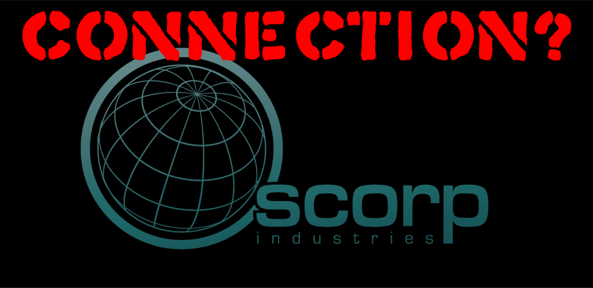

Daily Bugle
SPIDER-MENACE STRIKES AGAIN: CITY IN CHAOS!
Oscorps Troubling Connection

Oscorps Troubling Connection
Adding fuel to the fire, Oscorp Industries, under the leadership of CEO Norman Osborn, remains at the center of these controversies. Oscorps questionable safety protocols have placed the company in the spotlight as the Sinister Six seem to target its latest technological advancements repeatedly. Industry analysts speculate that Oscorps new energy reactor could potentially be weaponized, drawing criminals like the Sinister Six. Oscorp spokespersons deny any culpability, yet their insistence only raises more questions. Sources within Oscorps security department report frequent issues with security, fueling rumors that Osborns reach may extend into more shadowy dealings. With Spider-Man closely tied to these events, conspiracy theorists speculate that the hero himself could have ties to Oscorp or, worse, be a pawn in their high-stakes game.